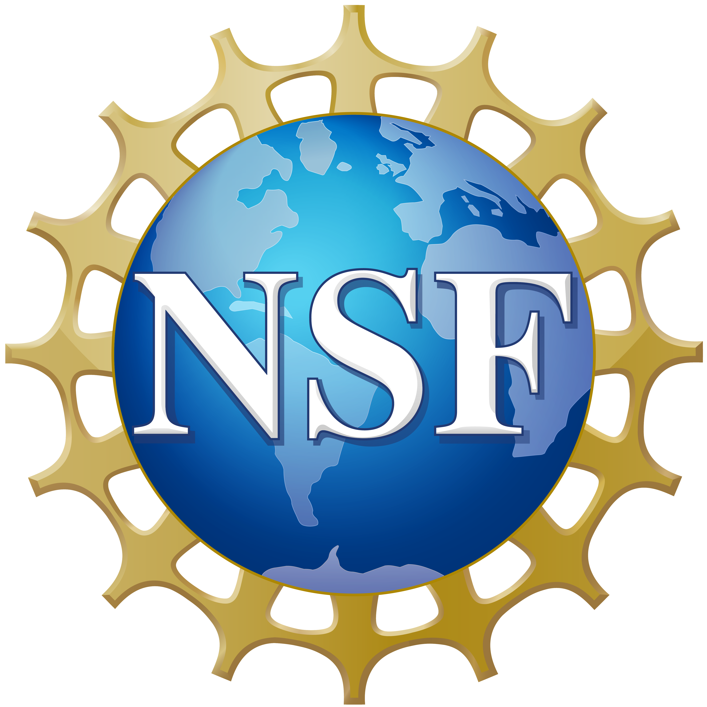
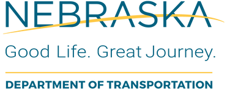

PROJECT




- Collaborative Research: CSR: Small: CADaaS: Deterministic Communication and Predictive Computation for Connected Autonomous Driving as a Service [Webpage]
- Funding Source: NSF CNS 2426481
- Total Budget: $289,374
- Role: Lead Principal Investigator, in the collaborative project with Dr. Weisong Shi at the University of Delaware
- Duration: Mar. 2025 – Feb. 2028
- Abstract: This project aims to democratize autonomous driving technologies to every connected vehicle via designing a new connected autonomous driving as a service (CADaaS). The fundamental idea is to enable adaptive vehicle-edge collaboration for collaboratively performing any latest autonomous driving stacks, including perception, prediction, and planning.
- Evaluating the Interoperability of Connected and Autonomous Vehicles and Signal Phasing and Timing Infrastructure
- Funding Source: Nebraska Department of Transportation
- Total Budget: $185,796
- Role: Co Principal Investigator, with the PI Chun-Hsing Ho, and the other Co-PI Li Zhao
- Duration: Jul. 2025 – May 2027
- Abstract: The signal phase and timing (SPaT) message is a crucial component of CAV communication, facilitating connectivity between vehicles and infrastructure. This project proposes a series of vehicle-to-SPaT infrastructure tests using the UNL-owned autonomous vehicle and other connected vehicles to facilitate the interoperability tests.
- Development of Reliable Wireless Connectivity in Support of e-Ticketing System in Nebraska Rural Construction Sites
- Funding Source: Nebraska Department of Transportation
- Total Budget: $173,485
- Role: Co Principal Investigator, with the PI Chun-Hsing Ho, and the other Co-PI Kyungki Kim
- Duration: Jul. 2025 – May 2027
- Abstract: In this project, we offer Site-Net, as a low-cost and easy-to-use private wireless network to address the limited or unavailable e-ticketing connectivity issue and advance the current e-ticketing practices. The objectives of Site-Net are cost-efficiency and automation which will ensure the network will operate automatically without human intervention in the field.
- EPSCoR Research Fellows: NSF: Online Hierarchical Learning for Network Autonomy in Open Radio Access Networks [Webpage]
- Funding Source: NSF 2428427
- Total Budget: $285,694
- Role: Sole Principal Investigator
- Duration: Jan. 2025 – Dec. 2026
- Abstract: This fellowship project outlines a first-of-its-kind safe zero-touch network management system by designing a new safe online hierarchical learning framework for O-RAN mobile networks. Leveraging the city-scale network infrastructure at the host institution, Iowa State University, the project will focus on three research objectives.
- NeTS: Small: AutoSlicing: Safe Online Autonomous Network Orchestration Towards Pervasive Slicing-as-a-Service [Webpage]
- Funding Source: NSF CNS 2333164
- Total Budget: $531,134
- Role: Sole Principal Investigator
- Duration: Sept. 2024 – Aug. 2027
- Abstract: This project outlines a first-in-its-kind autonomous network orchestration framework towards pervasive slicing-as-a-service. It addresses the continual domain shifting issue by automatically bridging simulation-to-reality gap via offline augmenting simulators and safely adapting time-varying dynamics via online learning in real-world networks. It will be evaluated in UNL site-scale and PAWR city-scale platforms.
- Roadside-to-Vehicle Crash Avoidance Warning System for Commercial Motor Vehicles on Rural Roads
- Funding Source:
- Total Budget: $1,342,761
- Role: Co-Principal Investigator (with PI Nathan Huynh, and other Co-PIs Li Zhao and Mehmet Vuran, Mizan Rahman@UA, and Eren Erman Ozguven@FAMU-FSU)
- Duration: Sept. 2024 – Sept. 2026
- Abstract: The goal of this project is to advance the safety protocols for commercial motor vehicles (CMVs) by integrating cutting-edge road hazard condition detection technologies in real-time. By using this new approach, we aim to minimize the likelihood of crashes in strategic locations on rural roadways.
- CropTwin: Automatic Digital Twin for Crop Growth Modeling towards Smart Irrigation Management [Webpage]
- Funding Source: USDA NIFA AFRI
- Total Budget: $300,000
- Role: Principal Investigator (with Co-PI Hongzhi Guo, Yufeng Ge, and Saleh Taghvaeian)
- Duration: Sept. 2024 – Aug. 2026
- Abstract: The goal is to design, develop, and deploy new digital twin systems in regard to crop growth modeling for smart irrigation management. We propose the CropTwin system with three core research tasks, including cost-efficient IoT systems, automatic digital twining, and smart irrigation solutions. We deploy and evaluate CropTwin in the real-world research farm at UNL, throughout a full soybean growth session.
- CC* Integration-Large: Husker-Net: Open Nebraska End-to-End Wireless Edge Networks [Webpage]
- Funding Source: NSF OAC 2321699
- Total Budget: $891,000
- Role: Principal Investigator (with Co-PI Mehmet Vuran and Toolika Ghose)
- Duration: Oct. 2023 – Sept. 2025
- Abstract: This project outlines a novel open end-to-end cellular edge network (Husker-Net) by designing, deploying, and operating private 5G network over a light-licensed CBRS spectrum in multiple UNL campuses. Husker-Net is featured with ultra-low operating cost with open-source modules, flexible deployment with both wired and wireless backhaul (e.g., LEO in mid of Nebraska), and zero-touch management with automatic model-free algorithms.
- CNS Core: Medium: Field-Nets: Field-to-Edge Connectivity for Joint Communication and Sensing in Next-Generation Intelligent Agricultural Networks [Webpage]
- Funding Source: NSF CNS 2212050
- Total Budget: $1,000,000
- Role: Co-Principal Investigator (with PI Mehmet Vuran, and Co-PI Shuai Nie and Christos Argyropoulos)
- Duration: Oct. 2022 – Sept. 2025
- Abstract: In this project, an interdisciplinary team of experts in millimeter-wave communications, metamaterial and metasurface-inspired antenna array design, dynamic spectrum access, and radio access networks in collaboration with experts in agricultural robotics and sensor-based plant phenotyping aim to provide connectivity to rural farm fields and increase national competence to bring new technologies to rural America rapidly.